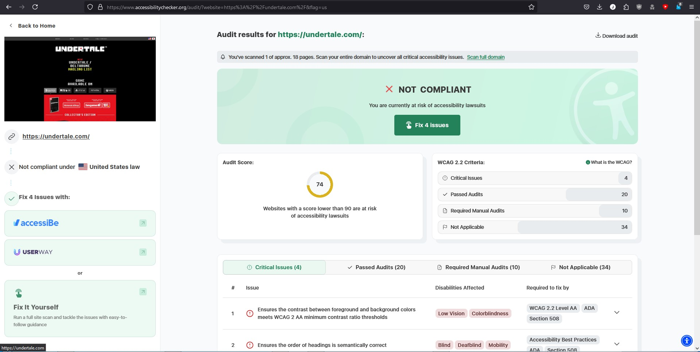
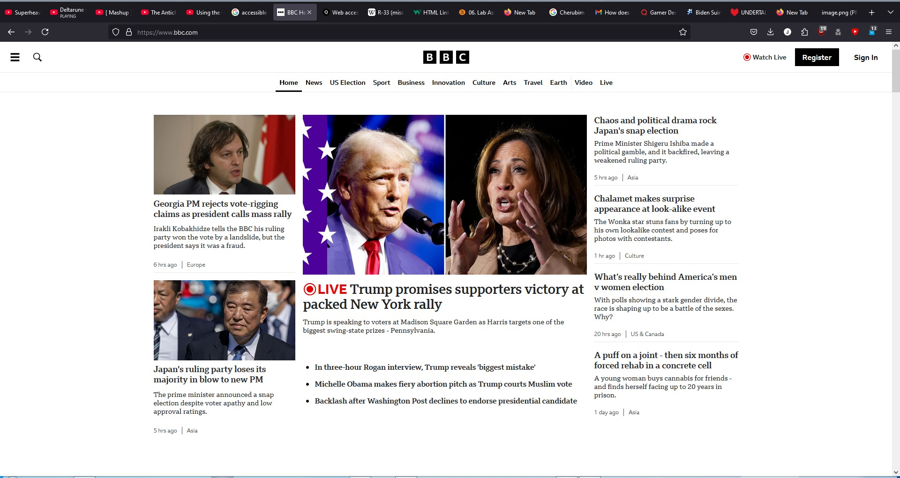
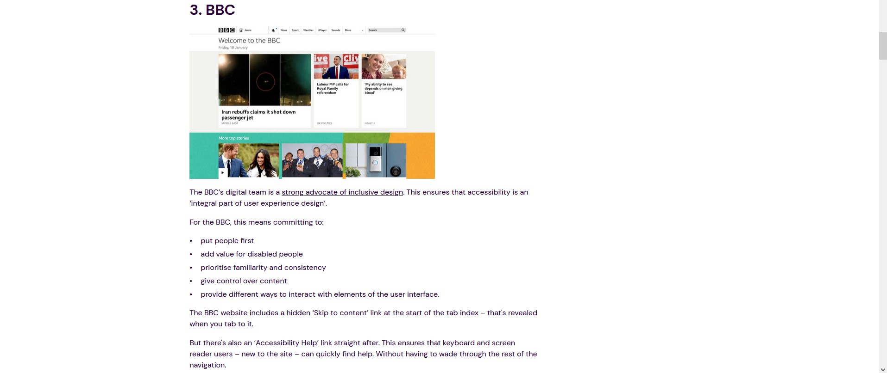

The game's website is Undertale.com .
Accessibility
Undertale.com, hence the name, is entirely made and directed towards players of the game, not to people who can't read or see.So I suppose it will not be TOO suprising to find that the site flunked the accessibility test with a score of a whopping 74 points (90 is "passing").

Yep. Four issues according to the checker. But it seems as if Toby Fox cares about the looks of the site moreso than "visibility for the blind" (mostly because sites that ARE "accessible" blind you with light mode that is impossible to remove).
In addition, these sites often don't have settings for high contrast;
I hate to say this, but effectively, They prioritize one group of disabilities over another.
(I know it seems rude, but I speak the truth here). As an example, my great-grandma has end-stage macular degeneration
(I call it that because it already made her blind; effectively meaning it's done its job). All she would see is a massive gray blotch, and the remainder is that overwhelmingly bright white, with absolutely no chance at seeing any text.

For people with mild or moderately progressed MD, maybe the high-contrast dark mode could help them see the news.
Getting back on topic, the site is actually high-contrast. The white text contrasts with the Black background like mine does here. This transitions nicely as the one CRAP principle I am contractually obligated to put here; Contrast.
As for efficiency, You can tab over to any link you want to click on with your keyboard. Great for people who just ran outta Triple A batteries.
Conclusion
To Toby Fox, the creator of Undertale and Deltarune (Who often implants himself to his game as a cute white dog or the face of one), I think you should add a button for accessibility help like we see in the below image, to not burden the visually impaired as much. 